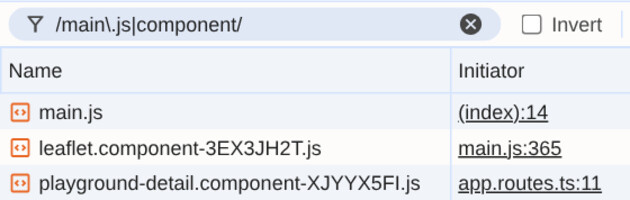

footer.component-….js and leaflet.component-….js come in right after main.js.
footer.component-….js
leaflet.component-….js
main.js
Click a playground, then Detaljer. Only now does playground-detail.component-….js load.
playground-detail.component-….js
